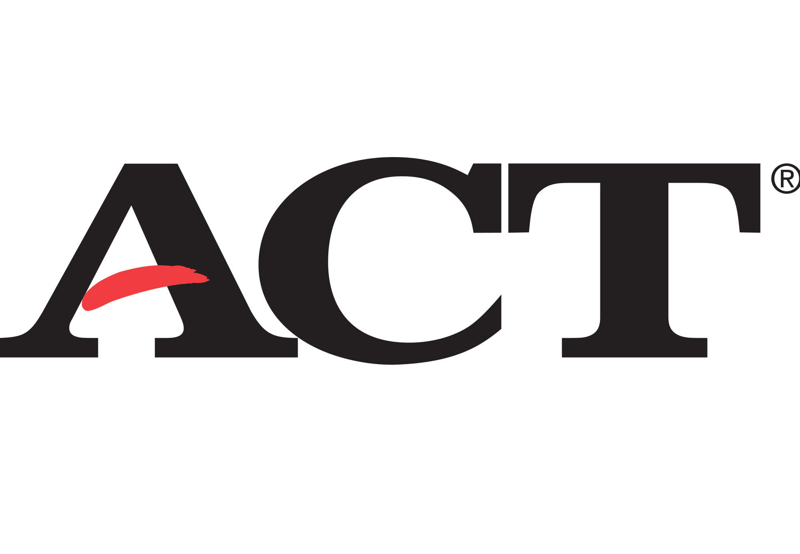

SAT or ACT?
As a student in the United States, you'll primarily have two options of tests to take. You'll either take the Scholastic Aptitude Test (SAT) or you'll take the American College Test (ACT).
What's a Subject Test?
While the ACT and SAT will test your general knowledge on subjects such as reading, writing, and mathematics, subject tests will allow you to show colleges your proficiency in a certain subject, such as Social Studies, English, Math, Science, or a Foreign Language.
Regardless of what test you choose to take, the test you take will allow colleges to get a better perspective on who you are as a student- your knowledge on general subject matter, your ability to handle stress and pressure, and your ability to study efficiently. You can choose to take the subject test a number of times - they're offered nearly every month of the year, including during the summer. We recommend to begin studying anywhere from 3-5 months in advance for your test. So that means if your test is in June, start studying in January.

We advise that you should take the SAT or ACT a max of 3 times. Colleges will receive every score of your test, even if you choose to do Score Choice. If they see that you take an SAT 10 times just to increase your score by 50 points, they know that you're just trying hard at that point. They may actually take that against you when looking at your application then. In addition, you should really only try for the subject tests one time each. If you don't get the score you want, try another subject test. Also, subject tests are offered only on the same days as the actual SAT. You can take up to 3 subject tests in the time allotted for a standard SAT test. There are no ACT Subject Tests, so should you choose to take the ACT, you'll have to take subject tests from the CollegeBoard (the company that runs the SAT). In addition, the SAT will focus more on analytical skills, while the ACT will focus more on science skills. Most, if not all colleges, do not care about the type of test you take. They just want to see your scores.
In addition, colleges will be looking for you to be taking advanced curriculum, proving that you are an apt student and able to perform at the caliber of college level students. In order to measure this, they use what is called Advanced Placement (AP) Tests. These tests are given in May of every year, and are usually done after a course has been studied in high school for one year. Colleges have different standards, but the most common one is that students who can receive a 4 or a 5 on their class's AP test will have that General Education requirement completed when in college.
Finally, students may want to research into their high school's curriculum on whether they offer IB Curriculum. IB, or the International Baccalaureate Program, is similar to AP tests, except it's mainly for international students. Normally, IB Tests are a series of exit exams, that cumulate towards a certain IB Diploma. This allows them to skip both GE classes as well as very few major required classes should the student score high enough on the exam.